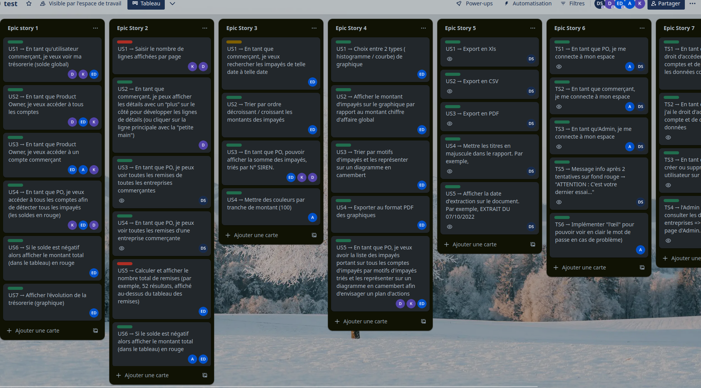

Dos Santos Daniel
Bienvenue,
En recherche de stage de 8 à 12 semaines à partir du 14 avril 2025
.svg)
En recherche de stage de 8 à 12 semaines à partir du 14 avril 2025
Actuellement en deuxième année de BUT Informatique, je suis passionné par le développement et les technologies du numérique. J'ai acquis des compétences solides en programmation, gestion de projets et conception logicielle grâce à divers projets académiques et personnels. Mon approche est orientée vers la résolution de problèmes et l'optimisation des performances, avec une attention particulière à l'expérience utilisateur et à la qualité du code. J'aime relever de nouveaux défis et apprendre en continu pour améliorer mes compétences techniques et méthodologiques. Mon objectif est d'évoluer dans le domaine du développement et de contribuer à des projets innovants.

À la fin de mes années de collège, j'ai obtenu le brevet des collèges avec la mention Très Bien.
J'ai obtenu mon Baccalauréat avec la mention Bien, avec comme spécialités Mathématiques et Physique-Chimie, qui m'ont conduit vers l'informatique, un domaine que je ne connaissais pas encore.
Première année et premières impressions dans le domaine de l'informatique : cette première année a été révélatrice pour mon parcours et mon avenir. J'ai commencé à acquérir des bases solides en programmation que j'ai appliquées dans des premiers projets universitaires.
(En cours) La deuxième année est une continuité directe de la première et m'a permis d'approfondir mes compétences tout en en forgeant de nouvelles, comme l'apprentissage de nouveaux langages de programmation ou la gestion de projet.
Actuellement à la recherche d'un stage d'une durée de 8 à 12 semaines dans le domaine de l'informatique, ce stage me permettrait de mettre en application directe les compétences que j'ai acquises au cours de ces deux dernières années.
Mon avenir reste encore assez vague, que ce soit dans 2 ou 10 ans. Cependant, une école d'ingénieur pourrait être une option intéressante à envisager pour la suite de mon parcours.





Ce projet avait pour objectif de faire en Java, le jeu de société Codex Naturalis crée par Thomas Dupont et edité par Bombyx. Mettant en pratique toutes les connaissances acquises depuis le debut de l'années. Ce projet m'a surpris car il aura été l'un des plus facile à réalisé. L'objectif de ce projet été de tester nos capacités en developpement orienté objet. Il m'aura permis egalement de tester l'architecture MVC, avec toutes les parties à réaliser pour le jeu. Le jeu en lui même est un jeu de cartes multijoueurs mais un mode solo à été implémenté et de placer les cartes afin de gagner des points ainsi que de remporter la partie.
La réalisation d'un site web sur la ville d'Alger, en partenariat avec l'UNESCO. Présentant la ville dans son ensemble sans oublié son partimoine mondial La Casbah. Dans le cadre de mes etudes il m'aura permit d'acquierir les notions de gestion de projet ,benchmarking, desing-thinking etc. Dans le cadre personnel, ce projet m'a permit d'en apprendre plus sur la notion de projet qui est assez complexe dans sa réalisation mais plaisant car un projet nous permet de découvrir plein de chose Par la simple création d'une équipe, la répartition des rôles, la recherche documentaire, le maquettage et finalement le codage, ces étapes ont permisent d'obtenir une site web dynamique et responsive.

Mon premier projet en Python. Ce projet avait pour objectif de faire sur Python, le jeu d'arcade Qix sorti en 1981 par Taito. Mettant en pratique toutes les connaissances acquises depuis le debut de l'années. Il a été assez difficile pour un premier projet de la sorte mais il m'aura surtout servit à consolider mes compétences en programmation Ce projet m'a appris l'importance d'un projet en groupe.

Un site web de réservation de billets spatiaux inspiré de l'univers de Star Wars. Les langages utilisés sont HTML, CSS, PHP, JavaScript, C et Java. Il s'agit du premier projet combinant plusieurs langages de programmation. Ce projet a duré 3 mois, et la partie la plus intéressante a été la gestion du graphe des planètes en utilisant les algorithmes de Dijkstra et A*
Bankai est une plateforme web statique destinée aux entreprises, conçue pour les aider à gérer leur trésorerie, leurs remises et leurs impayés. Elle intègre des graphiques, des diagrammes, des tableaux ainsi que de nombreuses autres fonctionnalités pour une gestion optimisée. Ce projet scolaire a été développé en utilisant HTML, CSS, JavaScript et PHP. ( ID : 1001 | MDP : password123)

(En cours) Après avoir navigué entre les planètes avec Travia, le jeu se poursuit en explorant les articles Wikipédia : c'est le principe du jeu. D'une durée de 3 mois, ce jeu multijoueur en ligne a pour objectif de parcourir une liste de pages Wikipédia définie, en se déplaçant uniquement grâce aux liens présents sur chaque page. Ce projet est codé en React TypeScript et NodeJS.